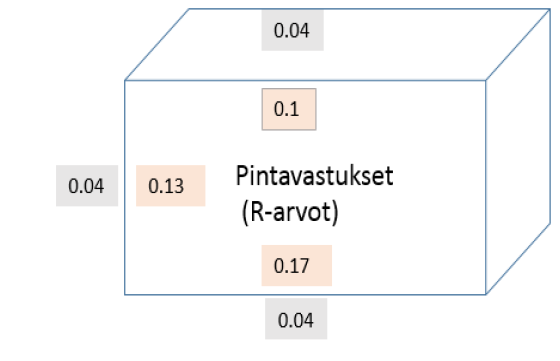

Lämmön siirtyminen
Contents
Lämmön siirtyminen#
Aiemmissa luvuissa ollaan tarkasteltu tilanteita, joissa lämpöenergia siirtyy suoraan kappaleiden välillä, esimerkiksi silloin kun kahta eri lämpöistä vettä sekoitetaan. Rakennustekniikassa lämmön siirtymistä pyritään usein hillitsemään. Talon seinä eristyksineen vähentää lämpöenergian siirtymistä lämpimän sisäilman ja kylmän ulkoilman välillä.
Lämpöä voi siirtyä johtumalla, virtaamalla tai säteilemällä.
Johtuminen eli konduktio: lämpö siirtyy aineen sisällä tai kahden aineen kosketuksessa. Esimerkkejä: lämmön siirtyminen hirsiseinän läpi; kuuman tai kylmän metalliesineen kosketus sormella.
Virtaaminen eli konvektio: lämpö siirtyy virtaavan aineen mukana. Aine voi olla nestettä tai kaasua. Virtaus voi tapahtua itsestään (esim. veto ikkunoista, maapallon sisäiset lämpövirrat, Golf-virta) tai se voidaan tuottaa pumpun tai puhaltimen avulla (esim. kiertovesijärjestelmät, kaukolämpö).
Säteily: lämpö siirtyy sähkömagneettisen säteilyn muodossa. Esimerkkejä: takka, Aurinko.
Johtuminen#
Lämmön johtumista tarkasteltaessa perustana on Fourierin laki: \(\Phi= \lambda A \frac{dT}{dx}\), missä \(\Phi\) on lämpövirta watteina, \(\lambda\) on aineen lämmönjohtavuus (yksikkö \(\text{W/(m}\cdot \text{K)}\)), \(dT\) on lämpötilaero hyvin ohuen ainekerroksen vastakkaisten pintojen välillä, ja \(dx\) on hyvin ohuen ainekerroksen paksuus.
Seuraavassa taulukossa on talonrakennuksessa sekä lumi- ja jäärakentamisessa käytettävien materiaalien lämmönjohtavuuksia.
Aine |
\(\lambda~(\text{W/(m K)})\) |
|---|---|
Puu |
0.14 |
Tiili |
0.55 |
Mineraalivillalevy |
0.045 |
Lasivilla |
0.050 |
Betoni |
0.095 |
Vuorivilla |
0.035 |
Finnfoam-eriste |
0.030 |
Kipsilevy |
0.23 |
Lumi |
0.2 – 0.8 (uusi lumi 0.2) |
Jää |
2.2 |
Integraalilaskulla Fourierin laista saadaan seuraavaksi esiteltäviä laskukaavoja.
Lämpövirta tasapaksun kerroksen läpi: \(\Phi= \lambda A \frac{\Delta T}{\Delta x}\)
Kaavassa \(\Delta T\) on lämpötilaero kerroksen pintojen välillä, ja \(\Delta x\) on kerroksen paksuus. Kaavaan voidaan suoraan sijoittaa niinsanottu U-arvo, \(U=\frac{\lambda}{\Delta x}\). Tällöin laskukaavaksi saadaan
\(\Phi= UA\Delta T\)
Esimerkki
Hirsiseinän pinta-ala on 12 neliömetriä ja paksuus 15 cm. Kuinka suuri lämpövirta kulkee seinän läpi, kun sisäpinnan lämpötila on +20 astetta ja ulkoseinän lämpötila on –20 astetta?
Ratkaisu
Sijoitetaan arvot kaavaan \(\Phi= \lambda A \frac{\Delta T}{\Delta x}\):
\(\Phi= 0.14~\frac{\text{W}}{\text{m}\cdot\text{K}} \cdot 12~\text{m}^2 \cdot \frac{40~\text{K}}{0.15~\text{m}} = 448~\text{W}\)
Tehtävä voidaan ratkaista myös U-arvoa käyttämällä. Kyseiselle seinälle se on
\(U=\frac{0.14~\frac{\text{W}}{\text{m}\cdot\text{K}}}{0.15~\text{m}}=0.933~\frac{\text{W}}{\text{K}\cdot\text{m}^2}\)
Tällöinkin lämpövirraksi saadaan
\(\Phi=0.933~\frac{\text{W}}{\text{K}\cdot\text{m}^2} \cdot 12~\text{m}^2 \cdot 40~\text{K} = 448~\text{W}\)
Lämpöä siirtyy seinän läpi siis noin 450 watin teholla. Tällöin huoneen pitäminen 20 lämpötilassa vuorokauden ajan vaatisi energiaa, esimerkiksi sähköä, noin 11 kWh.
U-arvon määritys
Oven tai ikkunan U-arvo voidaan määrittää seuraavanlaisella kokeella:
Tutkittava ovi/ikkuna asetetaan täydellisesti eristetyn kammion aukkoon. (Käytännössä eristyksen ei tarvitse olla täydellinen, vaan riittää, että seinämien-U arvot ovat tiedossa.)
Mitataan oven/ikkunan pinta-ala \(A\).
Käynnistetään kammion sisällä oleva vakiotehoinen (teho \(P\)) sähkövastus.
Odotetaan, kunnes lämpötilan nousu kammiossa pysähtyy, ja mitataan tällöin lämpötilaero \(\Delta T\) kammion ja ympäristön välillä.
Ratkaistaan U-arvo kaavasta \(\Phi = U A \Delta T\)
Esimerkki: Oven korkeus on 200 cm ja leveys 90 cm. Kun kammiossa on 60 W teholähde, kammion lämpötila nousee 45 astetta korkeammaksi kuin ympäristön. Mikä on oven U-arvo?
Pinta-ala ok \(A = 2.0~\text{m} \cdot 0.9~\text{m} = 1.8~\text{m}^2\), lämpövirta on yhtä suuri kuin lämmittimen teho \(P\) eli \(\Phi = 60~\text{W}\), ja lämpötilaero on \(\Delta T = 45~\text{K}\).
Ratkaistaan \(U=\frac{\Phi}{A \Delta T}\) ja sijoitetaan lukuarvot:
\(U = \frac{60~\text{W}}{1.8~\text{m}^2\cdot 45~\text{K}}= 0.74~\frac{\text{W}}{\text{K}\cdot\text{m}^2}\)
Lämpövirta useasta kerroksesta muodostuvan rakenteen läpi
Monikerroksiselle rakenteelle lämpövirran kaavaa on helpoin soveltaa muodossa \(\Phi= UA\Delta T\). Tällaisessa rakenteessa U-arvo lasketaan yksittäisten kerrosten arvoista \(U_i\) seuraavasti:
\(\frac{1}{U}=\frac{1}{U_1}+\frac{1}{U_2}+\frac{1}{U_3}+ \dots\)
eli toisin ilmaistuna: jos kerroksia on \(n\), niin kaava on
\(\frac{1}{U}=\Sigma_{i=1}^n \frac{1}{U_i}\)
Kaavan perustelu
Kaikkien kerrosten läpi kulkee sama lämpövirta \(\Phi\). Lämpötilaero \(\Delta T\) ensimmäisen ja viimeisen pinnan välillä muodostuu kerroksen eri pintojen lämpötilaeroista: \(\Delta T = \Delta T_1 + \Delta T_2 + \dots\).
Yksittäisten kerrosten pintojen välillä lämpötilaerot \(T_i\) saadaan kaavasta \(\Phi= U_i A\Delta T_i\):
\(\Delta T_i = \frac{\Phi}{U_i A}\)
Kokonaisuudessaan lämpötilaeroksi tulee siis
\(\Delta T = \frac{\Phi}{U_1 A} + \frac{\Phi}{U_2 A} + \dots\)
Tähän voidaan vielä sijoittaa koko rakenteen reunimmaisten pintojen välinen lämpötilaero \(\Delta T= \frac{\Phi}{U A}\):
\(\frac{\Phi}{U A}=\frac{\Phi}{U_1 A} + \frac{\Phi}{U_2 A} + \dots\)
Yhtälö voidaan nyt puolittain jakaa suureella \(\Phi\) ja kertoa suureella \(A\), jolloin yhtälö sievenee muotoon
\(\frac{1}{U}=\frac{1}{U_1} + \frac{1}{U_2} + \dots\)
Lämmön johtumista voidaan kuvailla myös lämpövastuksen \(R\), siis R-arvon, avulla. Se on U-arvon käänteisluku: \(R=\frac{1}{U}=\frac{\Delta x}{\lambda}\). Lämpövastuksen yksikkö on \(\frac{\text{K}\cdot\text{m}^2}{\text{W}}\).
Useasta kerroksesta koostuvalle rakenteelle kokonaisvastuus saadaan summana \(R=R_1+R_2+ \dots\) eli jos kerroksia on \(n\) kappaletta, niin \(R=\Sigma_{i=1}^n R_i\). Jos lämmön johtumisen mittana käytetään R-arvoa, niin lämpövirran kaavaksi muodostuu
\(\Phi=\frac{A \Delta T}{R}\)
Lämpövirta kaukolämpöputken läpi: \(\Phi=\frac{2 \pi L}{\text{ln}\left(\frac{r_2}{r_1}\right)}\lambda \Delta T\)
Ylläolevalla kaavalla saadaan poikkileikkaukseltaan ympyrän muotoisen putken ulkoseinän läpi johtuva lämpövirta \(\Phi\), kun putken pituus on \(L\), sisäsäde \(r_1\) ja ulkosäde \(r_2\). Kaavassa vakio \(\lambda\) tarkoittaa putken sisä- ja ulkoseinän välisen eristeen lämmönjohtavuutta. Kaavassa oletetaan, että putken sisä- ja ulkoseinä itsessään eivät eristä lämpöä. Lämpötilaero \(\Delta T\) mitataan putken sisällä kulkevan aineen ja ulkopuolella olevan aineen välillä.
Esimerkki
Esim. Kaukolämpöputkessa virtaa 98-asteista vettä. Putken sisäsäde on 5 cm ja ulkosäde 15 cm. Eristeen lämmönjohtavuus on 0.035 W/(mK). Laske 100 m pitkästä putkesta seinämän läpi karkaava lämpövirta. Putken ulkopinnan lämpötila on +4 astetta.
Ratkaisu
Lämpötilaero on nyt \(\Delta T=(98-4)~\text{K}=94~\text{K}\). Putken mitat voi laittaa yhtälöön senttimetreinä, sillä logaritmi lasketaan ulko- ja sisäsäteen suhteesta, joka on sama riippumatta siitä, missä yksikössä mitat ilmoitetaan. Lämpövirta on siis
\(\Phi=\frac{2 \pi \cdot 100~\text{m}}{\text{ln}\left(\frac{15~\text{cm}}{5~\text{cm}}\right)}\cdot 0.035~\frac{\text{W}}{\text{m}\cdot\text{K}} \cdot 94~\text{K} = 1881~\text{W} \approx 1.9~\text{kW}\)
Lämmön konvektio rajapinnoilla#
Konvektio tarkoittaa lämmön siirtymistä virtaavaan nesteen tai kaasun mukana. Konvektiota voi tapahtua seuraavien rajapintojen välillä:
kiinteä ja neste
kiinteä ja kaasu
neste ja kaasu
Nestettä tai kaasua kutsutaan yleisnimellä fluidi. Konvektiossa fluidin liike voi olla joko lämpövirran aiheuttaman lämpötilan ja sitä kautta tiheyden muutoksen aiheuttamaa (luonnollinen konvektio), tai keinotekoisesti esimerkiksi puhaltimella tai pumpulla tuotettua (pakotettu konvektio).
Konvektiossa siirtymä lämpövirta on \(\Phi=h A (T_p-T_{\infty})\), missä \(h\) on nimeltään konvektiivinen lämmönsiirtokerroin, \(A\) on pinta-ala, \(T_p\) on pinnan lämpötila ja \(T_{\infty}\) on fluidin lämpötila kaukana pinnasta.
Eristävät ilmakerrokset
Tarkastellaan pääasiassa rakennuksen ulkoseinästä ulkoilmaan tapahtuvaa konvektiota. Pelkästään lämmön johtumisen tarkastelu esimerkiksi seinien ja ikkunoiden läpi menevän lämpövirran laskemisessa antaa virheellisiä tuloksia. Todellisuudessa seinien tai ikkunoiden pinnoille muodostuu eristävä ilmakerros, joka pienentää lämpövirtaa. Ilmakerroksen eristyskyky riippuu ilmavirtauksista, esim. tuulen voimakkuudesta.
Edellisessä kaavassa esiintyvä konvektiivinen lämmönsiirtokerroin \(h\) riippuu olosuhteista. Kokeellisia arvoja eri tuuliolosuhteissa löytyy rakennusmääräyskokoelmista. Ilmakerrosta voidaan käsitellä laskuissa samalla tavalla kuin mitä tahansa rakenteen kerrosta. Kerroin \(h\) on tällöin sama kuin ilmakerroksen U-arvo.
Ilmakerroksen U-arvoista voidaan käänteislukuna laskea vastaavat R-arvot eli pintavastukset. Oheisessa kuvassa on esitetty arvoja, joita voi käyttää laskuissa (yksikkö \(\frac{\text{K}\cdot\text{m}^2}{\text{W}}\)):
katossa sisäpuolella 0.1
lattiassa sisäpuolella 0.17 (katonrajassa on isompia ilmavirtauksia kuin lattian tasolla)
sisäseinällä 0.13
kaikkien seinien ulkopuolella 0.04 (tuulen takia luku on pienempi kuin sisäseinällä)

Esimerkki
Tarkastellaan seinää, jonka rakenne ulkopinnalta sisälle päin on seuraavanlainen:
ilmakerros ulkoseinällä (kerros 1)
2 cm lautaa (kerros 2)
10 cm vuorivillaa (kerros 3)
2 cm kipsilevyä (kerros 4)
ilmakerros sisäseinällä (kerros 5)
Sisällä on 20 astetta lämmintä ja ulkona on 20 astetta pakkasta. Seinän pinta-ala on 10 neliömetriä. Laske rakenteen R-arvo, lämpövirta \(\Phi\), sekä lämpötilaerot kerroksittain.
Ratkaisu
Lasketaan ensin R-arvo. Yksittäisen kerroksen lämpövastus \(R\) voidaan laskea lämmönjohtuvuuden \(\lambda\) ja kerroksen paksuuden \(\Delta x\) avulla:
\(R=\frac{\Delta x}{\lambda}\)
Eri materiaalien lämmönjohtavuuden saadaan sivun yläreunan taulukosta. Seinän materiaalien lämpövastukseksi saadaan
\(R_{\text{seinä}}=R_2+R_3+R4\), missä
\(R_2=\frac{0.02~\text{m}}{0.14~(\text{W/(m K)})}=0.143~\frac{\text{K}\cdot\text{m}^2}{\text{W}}\),
\(R_3=\frac{0.10~\text{m}}{0.035~(\text{W/(m K)})}=2.857~\frac{\text{K}\cdot\text{m}^2}{\text{W}}\),
\(R_4=\frac{0.02~\text{m}}{0.23~(\text{W/(m K)})}=0.087~\frac{\text{K}\cdot\text{m}^2}{\text{W}}\).
Siis \(R_{\text{seinä}} = 3.087~\frac{\text{K}\cdot\text{m}^2}{\text{W}}\)
Lisätään tähän vielä seinän ulkopinnalta \(R_1=0.13~\frac{\text{K}\cdot\text{m}^2}{\text{W}}\) ja sisäpinnalta \(R_5=0.04~\frac{\text{K}\cdot\text{m}^2}{\text{W}}\). Kokonaisvastukseksi tulee
\(R=(3.087+0.04+0.13)~\frac{\text{K}\cdot\text{m}^2}{\text{W}} = 3.257~\frac{\text{K}\cdot\text{m}^2}{\text{W}}\)
Lämpövirta koko rakenteen läpi saadaan kaavalla \(\Phi=\frac{A \Delta T}{R}\), siis
\(\Phi=\frac{10~\text{m}^2\cdot 40~\text{K}}{3.257~\frac{\text{K}\cdot\text{m}^2}{\text{W}}}=123~\text{W}\)
Lämpötilan muutos kerroksessa \(i\) saadaan laskemalla \(\Delta T_i=\frac{\Phi R_i}{A}\).
Ilmakerros ulkoseinällä: \(\Delta T_1 = \frac{123~\text{W}\cdot 0.04~\frac{\text{K}\cdot\text{m}^2}{\text{W}}}{10~\text{m}^2} = 0.5~\text{K}\)
Lautakerros: \(\Delta T_2 = \frac{123~\text{W}\cdot 0.143~\frac{\text{K}\cdot\text{m}^2}{\text{W}}}{10~\text{m}^2} = 1.8~\text{K}\)
Vuorivilla: \(\Delta T_3 = \frac{123~\text{W}\cdot 2.857~\frac{\text{K}\cdot\text{m}^2}{\text{W}}}{10~\text{m}^2} = 35.1~\text{K}\)
Kipsilevy: \(\Delta T_4 = \frac{123~\text{W}\cdot 0.087~\frac{\text{K}\cdot\text{m}^2}{\text{W}}}{10~\text{m}^2} = 1.1~\text{K}\)
Ilmakerros sisäseinällä: \(\Delta T_5 = \frac{123~\text{W}\cdot 0.13~\frac{\text{K}\cdot\text{m}^2}{\text{W}}}{10~\text{m}^2} = 1.6~\text{K}\)
Esimerkki
Seinän pinta-ala on 12 neliömetriä. Seinän rakenne on sellainen, että siinä on kahden 12 mm paksuisen lautakerroksen välissä vuorivillaa. Mikä on vuorivillakerroksen paksuuden vähintään oltava, jotta lämpövirta seinän läpi olisi enintään 200 W, kun lämpötilaero ulkoilman ja sisäilman välillä on 30 astetta? Ota laskussa huomioon myös pintavastukset seinän ja ilman rajapinnassa.
Ratkaisu
Ratkaistaan tarvittava koko seinän lämpövastus \(R\) yhtälöstä \(\Phi=\frac{A \Delta T}{R}\):
\(R=\frac{A \Delta T}{\Phi}\)
Sijoitetaan suureiden arvot:
\(R=\frac{12~\text{m}^2 \cdot 30~\text{K}}{200~\text{W}} = 1.8~\frac{\text{K}\cdot\text{m}^2}{\text{W}}\)
Merkitään vuorivillakerroksen paksuudeksi \(x\). Tällöin koko seinän lämpövastus ilmakerroksineen on
\((0.04 + \frac{0.012}{0.14} + \frac{x}{0.035} + \frac{0.012}{0.14} + 0.13) ~\frac{\text{K}\cdot\text{m}^2}{\text{W}}\)
On siis ratkaistava yhtälö
\((0.04 + \frac{0.012}{0.14} + \frac{x}{0.035} + \frac{0.012}{0.14} + 0.13) ~\frac{\text{K}\cdot\text{m}^2}{\text{W}}=1.8~\frac{\text{K}\cdot\text{m}^2}{\text{W}}\)$
Yhtälön ratkaisuksi saadaan \(x=0.051\), siis noin 5 cm eristekerros riittää.
Esimerkki
Ilman lämpötila on -15 astetta. Laske jään muodostumisen nopeus (mm/h), kun jäätä on 5 cm, eikä sen päällä ole lunta. Veden lämpötila jään alla on 0 astetta. Jään lämmönjohtavuus on \(2.1~\text{W/(m K)}\), ja jään tiheys on \(\rho = 917~\text{kg/m}^3\).
Ratkaisu
Jääkerroksen R-arvo muodostuu jään omasta R-arvosta sekä sen päällä olevan ilmakerroksen R-arvosta. Sijoitetaan suureiden arvot:
\(R=\frac{0.05~\text{m}}{2.1~\text{W/(m K)}}+0.04~\frac{\text{K}\cdot\text{m}^2}{\text{W}} = 0.064~\frac{\text{K}\cdot\text{m}^2}{\text{W}}\)
Lämpövirta pinta-alalla \(A\) on \(\Phi = \frac{A \Delta T}{R}\). Ajassa \(t\) energiaa siirtyy vedestä ilmaan \(Q=\Phi t\). Toisaalta tämä on sama energiamäärä kuin se, joka vapautuu, kun massa \(m\) vettä jäätyy: \(Q=sm\). Siis \(\Phi t = sm\).
Muodostuvan jään massan paikalle voidaan sijoittaa jään tiheyden \(\rho\) ja tilavuuden \(V\) tulo, siis \(m=\rho V\). Edelleen jään tilavuus voidaan ilmaista muodossa \(V=Ad\), missä \(d\) on kerroksen paksuus. Siis saadaan yhtälö
\(\frac{A \Delta T}{R} t = s \rho A d\)
Pinta-ala voidaan supistaa pois, ja tällöin ratkeaa kerroksen paksuus
\(d=\frac{\Delta T \cdot t}{R \cdot r \cdot \rho}\)
Sijoitetaan ajan \(t\) paikalle yksi tunti eli 3600 sekuntia, ja saadaan
\(d=\frac{15~\text{K} \cdot 3600~\text{s}} {0.64~\frac{\text{K}\cdot\text{m}^2}{\text{W}}\cdot 333000~\frac{\text{J}}{\text{kg}}\cdot 917~\frac{\text{kg}}{\text{m}^3}}\)
Tulokseksi saadaan \(d=0.003~\text{m}\), eli tunnissa jäätä muodostuu noin 3 mm. Jään muodostumisnopeus ei tietenkään pysy vakiona, sillä jääkerroksen paksuus kasvaa koko ajan.